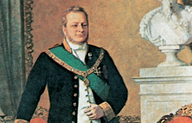

Lezione 16  L'Unità d'Italia
L'Unità d'Italia

Camillo Benso conte di Cavour inaugurò una nuova linea politica, facendo del Piemonte uno stato al pari degli altri in Europa. Fu uno statista importantissimo nella formazione dell’unità nazionale. La sua politica realista era slegata dalle ideologie e lontana dagli estremismi, il suo obiettivo era il progresso dell’Italia mediante scelte moderate e tese al graduale miglioramento della situazione. Qui alcuni brani dei suoi discorsi:
“Quanto più osservo il corso dei fatti [...] tanto più mi persuado che il giusto mezzo è il sistema politico più consono alle circostanze e meglio atto a salvare la società dai due eccessi che la minacciano, l’anarchia e il dispotismo. Quando dico il giusto mezzo, non intendo già di indicare un sistema particolare di tale o tale altro uomo, ma bensì quella politica che consiste nel concedere alle necessità dei tempi tutto ciò che la ragione può dimostrare giusto, e nel ricusare ciò che non ha altro fondamento che i clamori dei partiti o la violenza delle passioni anarchiche [...] Tutta Europa gravita verso il giusto mezzo [...] per noi è l’unica probabilità che abbiamo di salute [...].
L’umanità avanza a grandi passi verso la democrazia [...], la nobiltà crolla da ogni parte [...]. L’aristocrazia, potere municipale e ristretto, non trova più posto nell’attuale organizzazione della società. Che ci rimane allora per lottare contro la marea popolare? Nulla di consistente, nulla di forte, nulla di duraturo. È un bene? Un male? Non saprei dirlo, ma è secondo me, l’avvenire inevitabile dell’umanità.
(da Storia d'Italia dal Risorgimento alla Repubblica, Il Mulino, Bologna, vol. 1)